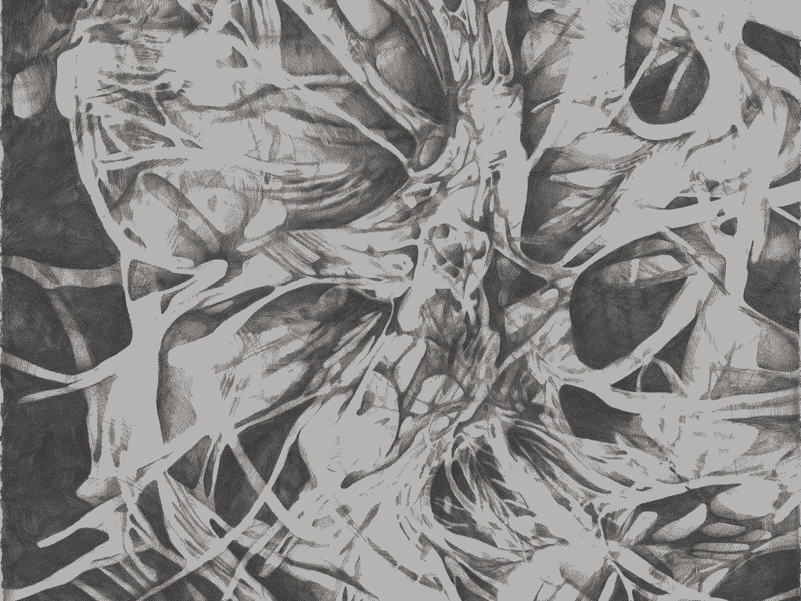

RITUAL is the first release in a series of Albums I'll be releasing every month for a year as part of my thesis. This series focuses on ideas of sound as ritual practice along with themes of architecture, dreams, land acknowledgment, academia, indigenous practices, sexuality, love and relationships and the internet. The purpose of this series is to really dive into the idea of recorded improvisation as a ritual practice and generative/algorithmic systems as a connection to nature and the organic/organism. Sadnoise has always been as much about the conversation between the internet and nature or the "absence" of the internet as it has been about the interaction between produced or manipulated sound and physical space.

Artwork by Hannah Rosies
SYSTEMS is an album archiving written and sonic explorations of various analog and digital systems that I use during the process of designing sound, as an attempt to demystify some synth esoteria.
Listening Instructions (suggested):
Listen to this album in full or in smaller periods of time, in direct sunlight, or a low lit environment,
preferably with headphones, or speakers spread far apart. Sit or lay down in a comfortable place
and position. Have your favorite snacks or beverages nearby for occasional consumption. Read
the track stories as the corresponding tracks play.
|
|
See Documentation.